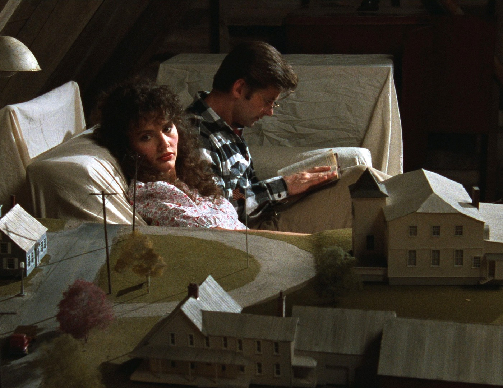
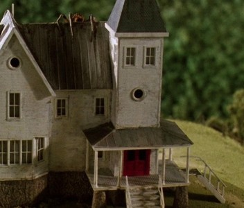

Charles and Delia Deetz, at home
Dinnerat
THEDEETZES’

Winter River, to scale. Found in the attic.
DELIA DEETZ
Dinner Guest, No. 3, 1988
Welded steel, fun fur, nerve.
Do not touch. Otho insists.
Do not touch. Otho insists.
Saturday at eight
The Maitland house,
remodelled at last.
Dress: strange and unusual.
remodelled at last.
Dress: strange and unusual.

Before Delia.